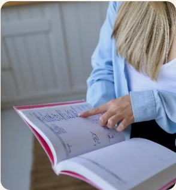

Постоянная усталость,
даже после отдыха
Ваш организм
не против Вас,
нужно лишь
научиться
его понимать
Разберёмся, что в питании и образе жизни может влиять на самочувствие, энергию и вес — и соберём понятный план, который впишется в Ваш обычный ритм.
 Елизавета · нутрициолог
Елизавета · нутрициологздоровые привычки✦энергия✦самочувствие✦пищеварение✦сон✦комфортный вес✦
Если Вам знакомо хотя бы одно из этих состояний,
не спешите винить себя. Причина может быть не в силе воли, а в том, как устроены питание, режим и повседневные привычки.
Вес стоит на месте,
несмотря на усилия
Вздутие
и дискомфорт
после еды
Постоянная тяга
к сладкому
«Новая жизнь»
с понедельника
снова и снова
Каким может стать Ваше самочувствие
ФИЗИЧЕСКИ
- Больше энергии в течение дня
- Более комфортное пищеварение
- Постепенное движение к комфортному весу
- Понимание своего питания
- Привычки, которые реально соблюдать
ЭМОЦИОНАЛЬНО
- Спокойнее отношение к еде
- Уверенность в повседневном выборе
- Понимание, что делать дальше
- Меньше необходимости «садиться на диету»
- Больше доверия к своему телу
Питание должно работать
в Вашей жизни, а не только
в идеальном плане.
Строгие схемы редко выдерживают реальность. Поэтому рекомендации мы сразу подстраиваем под Ваш график, вкусы, поездки, работу и обычные бытовые ситуации.
Понимание вместо запретов
Разбираем, какие привычки и решения действительно влияют на Ваше состояние.
Поддержка без осуждения
Без стыда за срывы и без требования быть идеальной каждый день.
Реальная жизнь вместо шаблона
Рекомендации должны работать дома, в ресторане, на работе и в отпуске.
Небольшие шаги
Стабильные изменения важнее резкого старта, который невозможно удержать.
ОБО МНЕ
Компетентность без дистанции

Медицинская база
Дипломированный нутрициолог с медицинским образованием. В работе опираюсь на современные данные и доказательный подход.

Внимание к деталям
Смотрю на рацион, режим, обследования и самочувствие в связке, а рекомендации объясняю понятным языком.
Спокойная работа без давления
Изменения подбираем так, чтобы их можно было применять в обычной жизни и не превращать питание в постоянный контроль.
Листайте стрелками или свайпом. В этот блок можно добавлять новые фотографии и кейсы «до / после».
Дипломы и сертификаты
Медицинское образование и профессиональная переподготовка подтверждены документами.
Подберите формат,
который подходит
именно Вам
Разовая встреча — чтобы разобраться в ситуации. Сопровождение — чтобы внедрить изменения и не остаться с планом один на один.
Разовая консультация
5 000 ₽- Разберём Ваш запрос, рацион и режим
- Посмотрим результаты анализов, если они есть
- Найдём факторы, которые могут мешать самочувствию
- Составим персональные рекомендации
- Определим конкретные первые шаги
Результат: понимание ситуации и понятный план дальнейших действий.
ЗаписатьсяСопровождение · 4 недели
10 000 ₽- Определяем цель и исходную точку
- Постепенно корректируем рацион
- Работаем с пищевыми привычками
- Разбираем сложные ситуации по мере их появления
- Отслеживаем самочувствие и динамику
- Корректируем рекомендации в течение месяца
Результат: план, который Вы успеваете попробовать, адаптировать и встроить в жизнь.
ЗаписатьсяКак проходит наша работа
Запись
Оставляете заявку, и мы договариваемся о дате.
Анкета
Заранее собираем основную информацию о Вашей ситуации.
Консультация
Разбираем запрос и определяем первые шаги.
Внедрение
Применяете рекомендации самостоятельно или с поддержкой.
Оценка результата
Смотрим, что изменилось и что корректировать дальше.
Что говорят клиенты
−5 кг за 1,5 месяца
«Мне было важно, чтобы мама ощущала заботу и понимала смысл питания. Она постепенно стала по-другому смотреть на продукты и стала спокойнее относиться к рациону».
Дочь клиентки Марии, 52 года · сопровождение«Потихоньку начинаю распознавать чувство голода и замечать привычки. Идём в нужном направлении».
Анастасия, 30 лет · сопровождение«Мне было комфортно во время работы. Я стала лучше понимать питание и спокойно задавала вопросы по ходу».
Дарья, 26 лет · сопровождение«Если бы все так к своей работе подходили, мир был бы сильно лучше».
Виктор, 28 лет · консультацияЧастые вопросы
«Это дорого»
Можно начать с одной консультации: она подходит, если нужен разбор и план. Сопровождение стоит выбирать, когда важна регулярная связь и корректировки по ходу.
«Не хочу пить добавки»
Добавки не являются обязательной частью работы. Сначала смотрим на питание, режим и привычки. Всё, что требует назначения врача, остаётся в зоне медицинской помощи.
«Я уже всё пробовал(а)»
Важно понять, что именно Вы уже делали и почему это не удалось удержать. На этом и строим следующий, более реалистичный план.
«Наверное, надо просто меньше есть»
Количество еды имеет значение, но на самочувствие и привычки также влияют структура рациона, насыщение, режим, сон и активность.
«А если у меня есть заболевания?»
Нутрициологическая работа не заменяет диагностику и лечение у врача. При необходимости я рекомендую обратиться к профильному специалисту.
МОЖНО НАЧАТЬ С ОДНОГО РАЗГОВОРА
Не обязательно менять всё сразу
Начнём с того, что сейчас сильнее всего мешает Вам чувствовать себя лучше. Если сомневаетесь в формате — подскажу, с чего разумнее начать.